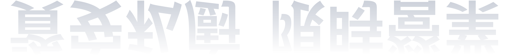
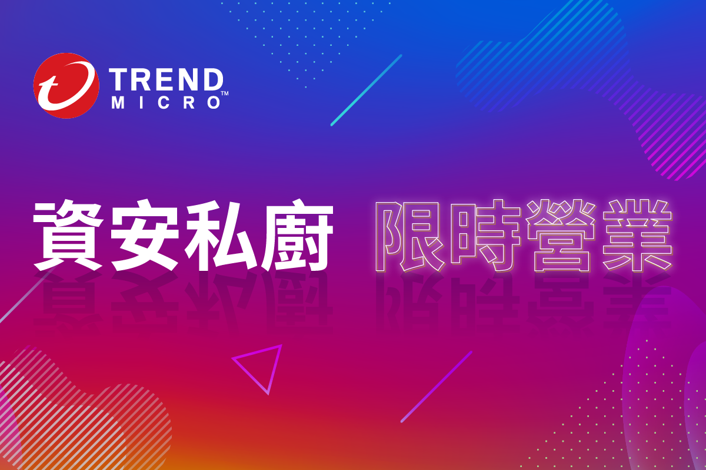

身為資安最高決策者的您經常感到力不從心，疲憊不堪嗎？
趨勢科技InfoSec*主廚團隊設計出今日資安長最需要的專屬五道佳餚，道道都是獨門配方，
更搭配瞬間補給戰力的高檔食材，邀請您即刻預約品嚐。
更搭配瞬間補給戰力的高檔食材，邀請您即刻預約品嚐。
*趨勢科技InfoSec：成立16年的趨勢科技InfoSec 團隊，致力於維持全球研發部門生產流程安全管理，員工的資安意識的提升，對於趨勢科技品牌商譽的維持功不可沒。
參加資格（報名資格須審核）
資訊長或資安長
公司資安決策者或資安最高管理者
線上課程
日期時間
每周菜單
課程簡介
講師
8/24
14:00 - 15:00
資安長終於可以享受平靜的夜晚
身爲跨國資安企業資安長，隨時都必須面對各類突發的資安事件，如何安穩的度過每一夜既是壓力也是挑戰，所以如何管理企業資安的風險視爲資安長的首要任務。
趨勢科技全球資安長
Jonah Feng
現任趨勢科技資安長，在資安領域擁有三十年以上經歷。專長為資安治理。
8/31
14:00 - 15:00
這就是趨勢科技零信任的旅程
零信任是一種資訊安全持續改善策略。本次講堂會跟大家分享趨勢科技的零信任旅程，從評估現代化環境的複雜度、受攻擊面分析到技術實作進而改善零信任成熟度。
趨勢科技InfoSec 安全管理師
Tony Lee
具有五年趨勢科技於 APAC/中東/非洲 IT 管理及營運經驗。現任資深專案經理，推動零信任持續改善。
9/07
14:00 - 15:00
趨勢科技資安團隊的日常是這樣
- InfoSec 的目標及定位
- 對外服務的系統資安檢測機制
- 各式產品偵測紀錄與關聯分析
- 員工自我回報機制
趨勢科技 InfoSec 安全管理師
Tim Tai
在趨勢資安部門13年資歷，現任資深安全管理師，主要負責弱點管理與評估。
9/14
14:00 - 15:00
雲端之旅原來都有一樣的挑戰
雲端環境的興起，讓企業有了更彈性的資訊環境，但雲端環境的特殊性，卻讓資安人員在管理上充滿了迷霧。
趨勢科技為台灣最大的雲端使用企業，因此趨勢科技InfoSec團隊在趨勢雲端化的過程中也面臨了巨大的挑戰，今天就讓趨勢科技InfoSec團隊來分享雲端資安治理的方式及心得，期許讓您在雲端化的過程中能更加順利。
趨勢科技為台灣最大的雲端使用企業，因此趨勢科技InfoSec團隊在趨勢雲端化的過程中也面臨了巨大的挑戰，今天就讓趨勢科技InfoSec團隊來分享雲端資安治理的方式及心得，期許讓您在雲端化的過程中能更加順利。
趨勢科技 InfoSec 安全管理師
Eddie Wang
在資安領域擁有25年以上經歷。現任趨勢科技網路安全架構師，負責內部專案的資安評估、以及新資安解決方案的評估與導入
10/05
14:00 - 17:00
趨勢科技總部戰情室 ＆ 資安長交流茶會
* 完成報名活動，經過資格審核，即可獲得專屬連結和帳號。同一時段，一個帳號只能登錄一次。
* 課程均為線上課程，唯第五堂課程為趨勢科技戰情室參訪。